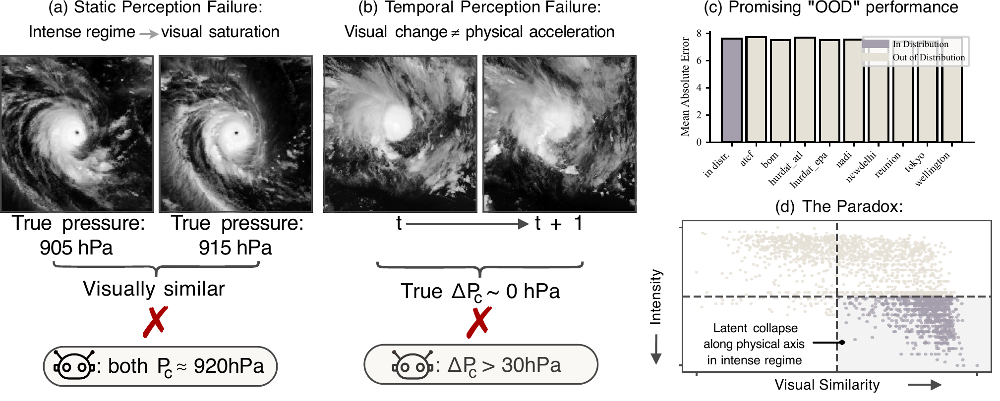
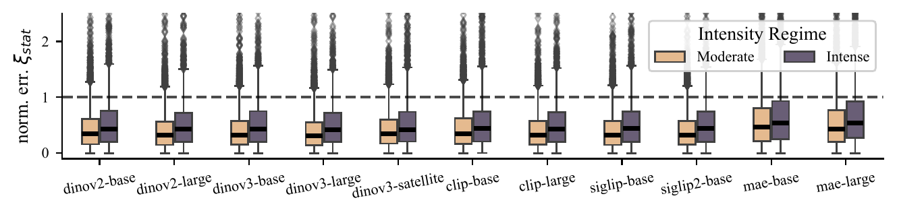
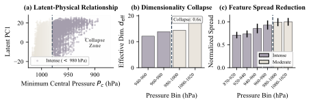
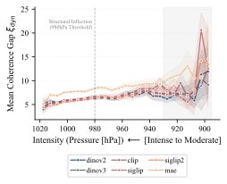

The Perception–Physics Paradox
Probing Scientific Alignment with TC-Bench
While Vision Foundation Models (VFMs) excel at predictive tasks on satellite imagery, their performance can arise from visual correlations rather than underlying structural invariants, making even perception-based out-of-distribution accuracy a poor proxy for scientific utility. As a result, models may look correct without reasoning correctly — a discrepancy we term the Perception–Physics Paradox. To address this gap, we introduce scientific alignment as an implicit objective for representation learning in scientific domains. We study a principled, testable aspect of scientific alignment through structural isomorphism, which requires latent representations to uniquely identify physical systems up to a linear reparameterization. This perspective induces a hierarchy of necessary conditions and yields a systematic probing protocol for physical and causal interpretability. To operationalize this framework, we release TC-Bench, a global, reproducible benchmark dataset with an automated construction pipeline for tropical cyclone research, and show that current VFMs rely on visual shortcuts that collapse in intense regimes, indicating that scientific alignment does not arise as a natural byproduct of scaling alone.

From the original paper (Yao, Polesello, Pervez, Muller & Locatello, 2026). Highlights added for this walkthrough.
Step 01 — Static perception failure In intense regimes (P_c < 980 hPa), two cyclones at genuinely different pressures — 905 vs. 915 hPa — show near-identical eye and cloud structure. A vision model reads them as the same picture and maps both to roughly the same latent state (P_c \approx 920 hPa), so it fails to resolve a physically meaningful pressure difference.
Step 02 — Temporal perception failure Run the clock forward. A visually salient change between t and t{+}1 — cloud expansion — makes the model predict a large intensity jump (\Delta P_c > 30 hPa) even though the true physical evolution is negligible (true \Delta P_c \approx 0 hPa). Visual change is mistaken for physical acceleration.
Step 03 — The promising surface Cross-agency evaluation — train on all but one meteorological agency, test on the held-out one — shows strong out-of-distribution accuracy. By the usual perception-based standard the representation looks robust and scientifically aligned. This is the trap.
Step 04 — The paradox underneath Despite that perceptual robustness, the latent representation collapses along critical physical axes in the intense regime: storms that differ in physics but not in appearance pile up together. Perceptual generalization alone does not guarantee a physically meaningful representation — the Perception–Physics Paradox.
Introduction
Vision foundation models such as CLIP (Radford et al. 2021), DINOv2 (Oquab et al. 2023), and SigLIP (Zhai et al. 2023) now serve as off-the-shelf perceptual backbones for scientific imagery. Their accuracy on geophysical prediction tasks is often read as evidence of physical understanding. We argue this inference is unsafe: a vision foundation model can be perception-aligned — sensitive to the visual texture of a phenomenon — without being physics-aligned.
We make this distinction measurable. Borrowing the causal stance that surface correlations need not respect underlying mechanisms (Pearl 2009), we define scientific alignment as a property of a learned representation rather than of its downstream accuracy, and we test it on tropical cyclones — a setting where the governing physics is well characterized and high-quality observational records exist.
Scientific alignment via structural isomorphism
Let \mathbf{x} be an observation (a satellite image) generated by a physical system \mathcal{S} in latent physical state \mathbf{y} \in \mathbb{R}^m (e.g. central pressure, maximum wind). A frozen encoder produces \mathbf{z} = g(\mathbf{x}) \in \mathbb{R}^d. We call \mathbf{z} structurally isomorphic to \mathcal{S} if there exists an injective linear map \mathbf{A} \in \mathbb{R}^{d \times m} such that
\mathbf{z} \;=\; \mathbf{A}\,\mathbf{y} \;+\; \varepsilon_\mu(\mathbf{y}), \tag{1}
where the residual \varepsilon_\mu(\mathbf{y}) is uniformly bounded in magnitude and Jacobian variation across regimes \mu \in \mathcal{M}. Intuitively, Equation 1 asks that the representation recover the physical state up to a fixed linear reparameterization, uniformly across the operating range — including the rare, extreme regimes that matter most. Scientific alignment is then the requirement that the residual term stay small everywhere, not just on average.
The regime index \mu partitions storms by intensity (central pressure P_c). The “intense” regime (P_c < 980 hPa) is rare in the data but is exactly where forecasting errors are most costly — so uniformity across \mu is the crux of the definition.
A representation can match the picture without recovering the state. Read as visual texture, a perception-aligned encoder clusters storms that look alike — collapsing physically distinct intensities into the same region of latent space whenever their imagery is similar. Read as physical state, a physics-aligned encoder instead lays storms out along an axis ordered by \mathbf{y}, so that a single fixed linear decoder recovers central pressure. Structural isomorphism is precisely the demand that the second reading hold — uniformly, including in the rare intense regimes where the two readings come apart.
TC-Bench
TC-Bench pairs IBTrACS v4r01 best-track records (Knapp et al. 2010) with GridSat-B1 geostationary infrared brightness-temperature imagery, both spanning 1980–2024, and is complementary in spirit to large tracking corpora such as Digital Typhoon (Kitamoto et al. 2023). After cleaning, the curated set contains 2,601 cyclones drawn from 3,928 raw storms across nine reporting agencies. Three hierarchical probes operationalize Equation 1:
- Static fidelity \mathcal{Q}_\text{stat} — can a linear decoder recover the physical state P_c from \mathbf{z}?
- Dynamic coherence \mathcal{Q}_\text{dyn} — do projected latent displacements L\,\Delta\mathbf{z}_t track physical evolution \Delta\mathbf{y}_t?
- Manifold consistency \mathcal{Q}_\text{con} — do independently decoded pressure/wind pairs respect physical couplings (gradient-wind balance)?
We probe frozen representations only, so any signal reflects the pretrained geometry rather than task-specific fine-tuning.1
1 Probing frozen features isolates what the backbone already encodes; fine-tuning would conflate representational content with capacity to adapt.
Results
The headline finding is a regime collapse: frozen VFM features decode physical state accurately in moderate regimes but degrade sharply once storms intensify. The collapse unfolds in four steps. (1) Embed — a frozen vision foundation model encodes each cyclone’s infrared imagery into a latent vector \mathbf{z}; nothing is fine-tuned, so the geometry is whatever pretraining left behind. (2) Moderate regime — a linear probe decodes the physical state P_c from \mathbf{z} accurately, and by the standard of perception-based accuracy the representation looks scientifically aligned. (3) Cross 980 hPa — as storms intensify past the P_c < 980 hPa threshold the probe error blows up and manifold-consistency violations \psi_\text{con} rise from about 20% in moderate regimes to about 55% in intense ones; the picture still reads as a cyclone, but the physics is no longer recoverable. (4) Dimensionality collapse — the effective dimensionality of the latent cloud drops by roughly 60% in intense pressure bins, compressing against pressure. A from-scratch supervised pixel baseline (ResNet-18) does not collapse, confirming that intensity remains statistically predictable from the imagery — the failure lies in the pretrained representation, not the data.
The regime collapse is visible directly in the probe errors. Across every VFM family, the static-fidelity error \xi_\text{stat} is markedly higher in the intense regime than in the moderate one — the same gap, model after model.
The collapse has two readings — a symptom you can measure and a mechanism you can see. Toggle between them below: the symptom (decode error rises in the intense regime, model after model) and the mechanism (the latent geometry that produces it).


From the original paper (Yao, Polesello, Pervez, Muller & Locatello, 2026).
Quantitatively, for a DINOv3-base backbone the effective dimensionality of the latent cloud drops by roughly 60% in intense pressure bins, and the leading principal component of variation compresses against pressure. Manifold-consistency violations \psi_\text{con} rise from about 20% in moderate regimes to about 55% in intense ones. Even nonlinear probes on the same frozen features degrade across the regime split (Table 1), so the collapse is not merely a limitation of a linear decoder. By contrast, the from-scratch supervised pixel baseline keeps a normalized MAE near 0.4 (median absolute error near 0.3) in the intense regime, where the frozen representations fail.
| Nonlinear probe on DINOv3-base features | Moderate | Intense |
|---|---|---|
| 2-layer MLP | 0.382 \pm 0.021 | 0.473 \pm 0.033 |
| Transformer probe | 0.284 \pm 0.020 | 0.503 \pm 0.022 |
The failure mode is geometric. As storms intensify, the leading principal component stops tracking pressure, the effective dimensionality of the latent cloud collapses, and physically distinct storms are mapped closer together — exactly the mechanism view of the symptom/mechanism toggle above.
The decode quality of a frozen representation does not fail uniformly — it fails as a function of intensity. A latent cloud that is well-spread and decodable in moderate regimes compresses and tangles as storms cross the 980 hPa threshold, exactly the geometry traced out panel by panel in that failure-mode analysis.
The dynamic-coherence probe shows the same pattern: temporal alignment of latent displacements degrades as storms intensify and spikes in the catastrophic regime (P_c < 920 hPa).

From the original paper (Yao, Polesello, Pervez, Muller & Locatello, 2026).
Conclusion
Perceptual competence and physical understanding are distinct properties of a representation, and the gap between them is largest precisely in the extreme regimes we most need models to handle. Scientific alignment, formalized as structural isomorphism in Equation 1 and measured by TC-Bench, does not emerge for free from scale or visual pretraining. We release TC-Bench as a reproducible target for representation learning that respects physics, not just pixels. Full references appear in the margin and are collected below.
Citation
@article{yao2026,
author = {Yao, Dingling and Polesello, Andrea and Pervez, Adeel and
Muller, Caroline and Locatello, Francesco},
title = {The {Perception–Physics} {Paradox}},
journal = {arXiv preprint},
date = {2026-05-23}
}